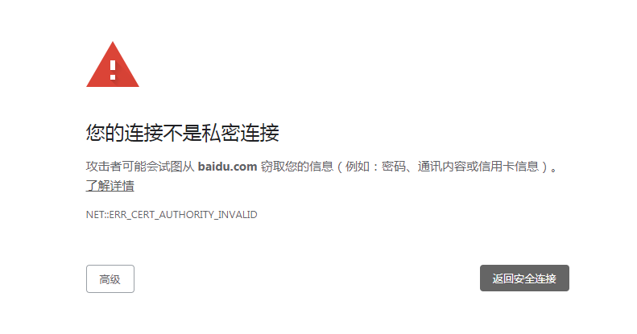

mitmproxy
mitmproxy是一款出色的代理工具。
$ pip install mitmproxy
mitmproxy的有命令行工具mitmproxy、Web接口mitmweb和Python APImitmdump。
安装完成，运行mitmweb命令：
$ mitmweb
Traceback (most recent call last):
File "c:\program files\python\lib\runpy.py", line 193, in _run_module_as_main
"__main__", mod_spec)
File "c:\program files\python\lib\runpy.py", line 85, in _run_code
exec(code, run_globals)
File "C:\Program Files\Python\Scripts\mitmweb.exe\__main__.py", line 5, in <module>
File "c:\program files\python\lib\site-packages\mitmproxy\__init__.py", line 9, in <module>
asyncio.set_event_loop_policy(asyncio.WindowsSelectorEventLoopPolicy())
AttributeError: module 'asyncio' has no attribute 'WindowsSelectorEventLoopPolicy'
是因为Python的版本过低，使用的是Python 3.6.6。为了保证其它Python模块不受影响，降低安装的mitmproxy的版本：
$ pip install mitmproxy==5.0.0
再次运行mitmweb命令：
$ mitmweb
Web server listening at http://127.0.0.1:8081/
Proxy server listening at http://*:8080
执行命令后，会自动在浏览器中打开http://127.0.0.1:8081/。此时，mitmproxy在监听8080端口。
然后，配置代理（可以使用浏览器插件、也可以通过Windows的“Internet属性”配置）；配置代理后，通过浏览器访问百度，结果出现错误如图：

原因是，通过mitmproxy代理服务器发送请求的时候没有证书，所以，需要安装证书。在mitmproxy代理启用的情况下通过mitmproxy服务器访问http://mitm.it：
选择按照windows证书，按照mitm.it的提示，安装证书。
※ 然后，当时还是不能访问百度……T_T，但是关闭代理，重新再开启就可以了，不清楚哪里操作有问题……但是就好了……
通过web页面，可以查看所有经过代理的网络请求。所以mitmproxy可以进行抓包。
mitmdump
mitmdump是mitmproxy的Python API。
使用mitmdump，可以通过Python脚本来处理请求。
创建脚本script.py：
def request(flow):
print('request url is %s' % flow.request.url)
执行命令：
$ mitmdump -s script.py
Loading script script.py
Proxy server listening at http://*:8080
mitmproxy代理服务器仍然在监听8080端口。通过代理访问网站，请求URL将会打印到控制台：
request url is https://cn.bing.com/rp/uObc-DdxqYlW3v2ThFF8gzRXABc.br.js
127.0.0.1:59116: GET https://cn.bing.com/rp/uObc-DdxqYlW3v2ThFF8gzRXABc.br.js HTTP/2.0
<< 304 0b
request url is https://cn.bing.com/rp/-QoOpHP6A3PgwMhZbTU9ZejR8H4.br.js
127.0.0.1:59116: GET https://cn.bing.com/rp/-QoOpHP6A3PgwMhZbTU9ZejR8H4.br.js HTTP/2.0
<< 304 0b
request url is https://cn.bing.com/rp/XJ8OmILbNhm0zU9tdkuGYeXVPRQ.br.js
127.0.0.1:59116: GET https://cn.bing.com/rp/XJ8OmILbNhm0zU9tdkuGYeXVPRQ.br.js HTTP/2.0
<< 304 0b
request url is https://cn.bing.com/rp/BZ4UfIeWu9BfKpat2kZG4pw6tmo.br.js
127.0.0.1:59116: GET https://cn.bing.com/rp/BZ4UfIeWu9BfKpat2kZG4pw6tmo.br.js HTTP/2.0
<< 304 0b
request url is https://cn.bing.com/rp/RKC0H0KX27d4LnXnSxCi63ZLiYg.br.js
127.0.0.1:59116: GET https://cn.bing.com/rp/RKC0H0KX27d4LnXnSxCi63ZLiYg.br.js HTTP/2.0
<< 304 0b
request url is https://cn.bing.com/rp/jLAw67Y0F8ph3rY-aZOF_BwSdiw.br.js
127.0.0.1:59116: GET https://cn.bing.com/rp/jLAw67Y0F8ph3rY-aZOF_BwSdiw.br.js HTTP/2.0
<< 304 0b
可以增加-q选项，这样，将不打印mitmdump日志，只打印脚本输出：
$ mitmdump -q -s script.py
更改脚本内容：
def request(flow):
flow.request.url = 'https://cn.bing.com'
再次执行mitmdump -s script.py，此时，不论通过代理访问任何网站，请求都将指向https://cn.bing.com。
还可以通过修改脚本，对请求的响应结果进行修改：
def response(flow):
text = flow.response.get_text()
for str in ['布尔什维克', '布尔什维克党']:
text = text.replace(str, 'fucking,布尔什维克')
flow.response.set_text(text)
搜索关键字“布尔什维克”，搜索结果则会被脚本修改为：
这其实就是通过mitmproxy模拟了中间人攻击，篡改了搜索引擎的搜索结果。